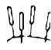
Acupuntura
Um conjunto de técnicas milenares da medicina tradicional chinesa que promove o equilíbrio energético e a cura de diversas doenças.
Atendimento humanizado para auxiliar no alívio de dores, ansiedade, estresse, insônia e na busca por mais qualidade de vida.

Um conjunto de técnicas milenares da medicina tradicional chinesa que promove o equilíbrio energético e a cura de diversas doenças.
Uma variação da técnica milenar da medicina tradicional chinesa que utiliza agulhas finas para estimular pontos específicos do corpo, com o objetivo de promover uma variedade de benefícios estéticos.
Técnica feita no pavilhão auricular que pode utilizar agulhas, sementes de mostarda, cristais, esferas de ouro ou prata para estimular os pontos relacionados com as áreas que precisam ser trabalhadas, promovendo a melhora da saúde do paciente.
Técnica que utiliza bastões geralmente feitos com artemisia, que são acesos e colocados próximo a pontos de acupuntura para promover a melhora da saúde, bem-estar e energia do paciente.
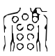
A ventosaterapia é um tratamento natural no qual são usadas ventosas para melhorar a circulação sanguínea em uma área do corpo. As ventosas criam um efeito de vácuo que suga a pele, aumentando o diâmetro dos vasos sanguíneos no local, melhorando dores e inflamações. Também é utilizada na estética para tratamento de celulite, redução de medidas e melhora do tônus muscular.
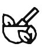
É uma técnica milenar da Medicina Chinesa que utiliza fórmulas com ingredientes de origem vegetal, mineral e animal para tratar o desequilíbrio do organismo dos pacientes, promovendo a melhora da saúde.
A dietoterapia chinesa é uma prática da medicina tradicional chinesa que entende a alimentação humana como ponto importante no tratamento e na prevenção de doenças. Ela difere em vários quesitos dos ensinamentos dietéticos da medicina ocidental e entende os alimentos mais pela sua função energética no organismo, promovendo saúde e bem-estar.
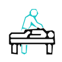
A massagem na Medicina Chinesa utiliza várias técnicas manuais ou com auxílio de ferramentas como gua-sha e ventosa para promover a saúde, o relaxamento e melhorar as dores em geral.
Escolha o tema que mais combina com sua necessidade e conheça melhor cada abordagem.
Alívio de dores, coluna e tendinite.
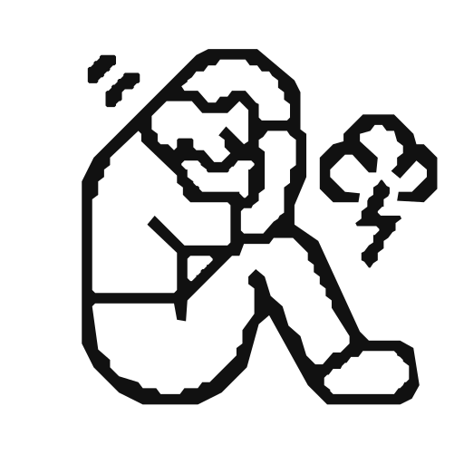
Relaxamento, sono e equilíbrio emocional.
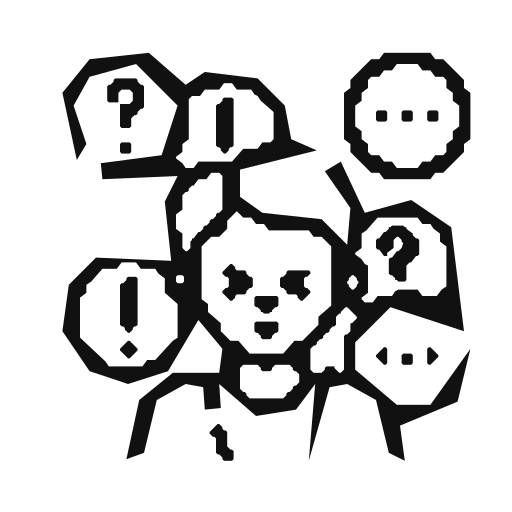
Bem-estar e apoio ao equilíbrio do humor.
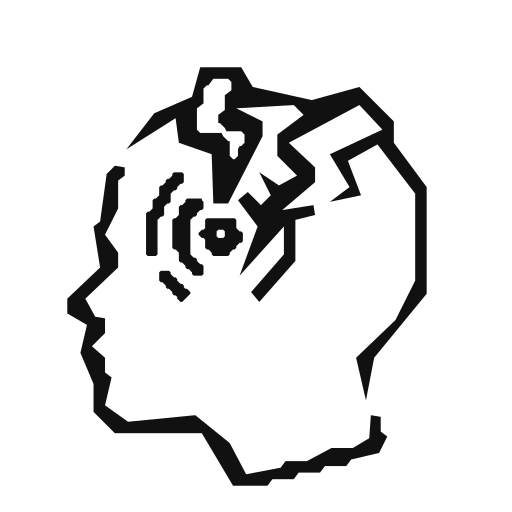
Redução da dor e frequência das crises.
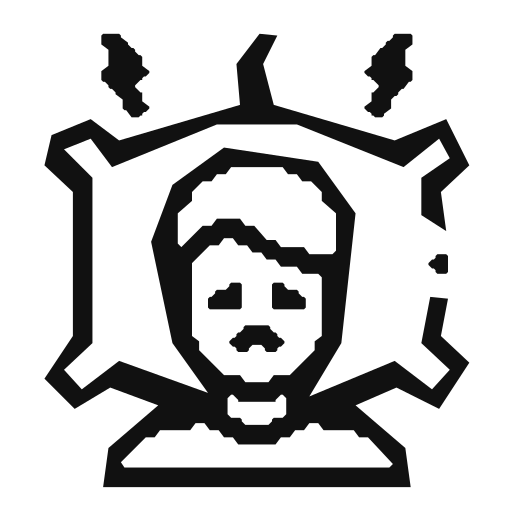
Sono mais profundo e restaurador.
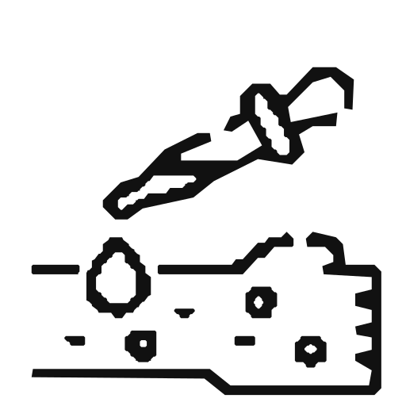
Cuidados complementares para pele e desconfortos.
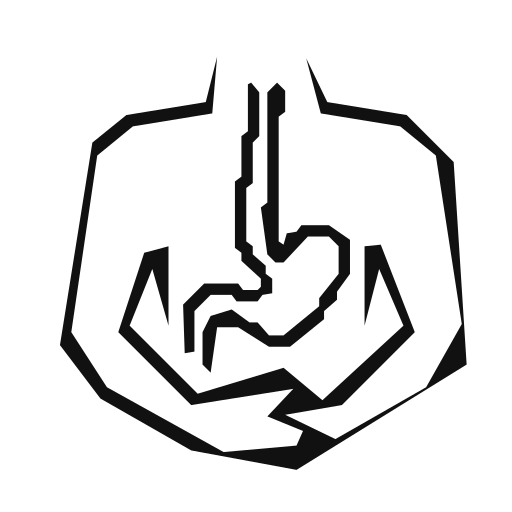
Digestão, intestino e desconfortos abdominais.
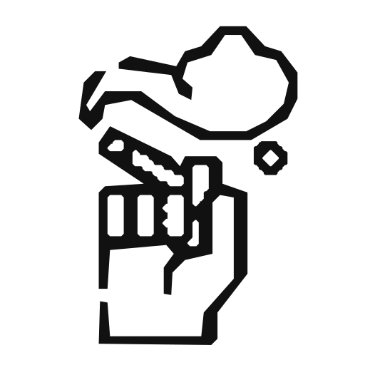
Apoio para compulsões e vícios.
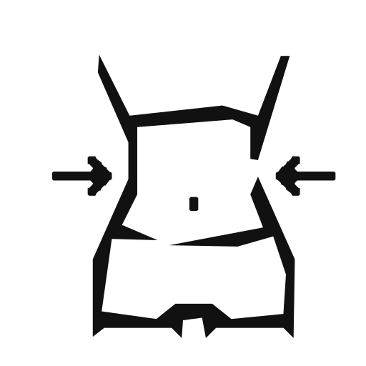
Redução de medidas e equilíbrio alimentar.
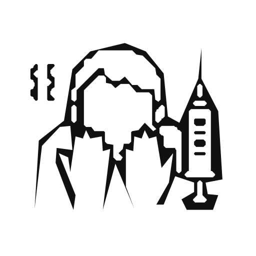
Hipnose para medo, trauma e crenças.
Vitalidade e equilíbrio geral.
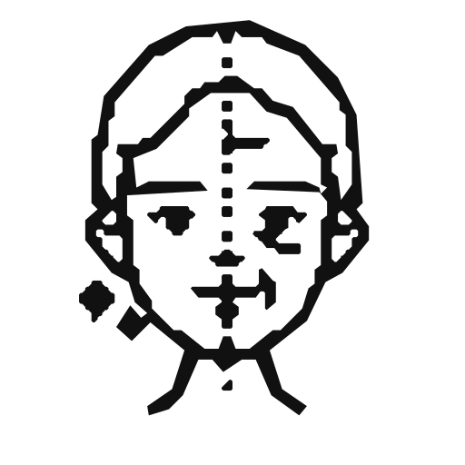
Rugas, celulite, estrias e cicatrizes.
A proposta é acolher cada pessoa de forma individual, respeitando sua história, rotina e necessidades.
Entre em contato pelo WhatsApp e descubra qual abordagem pode ajudar no seu caso.
Chamar no WhatsApp